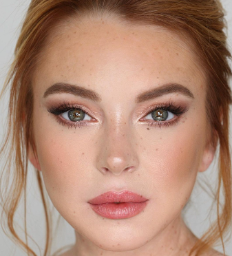
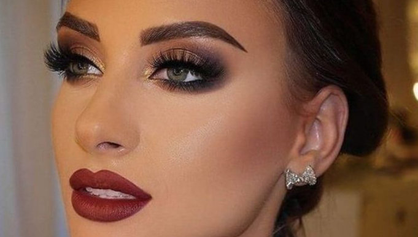
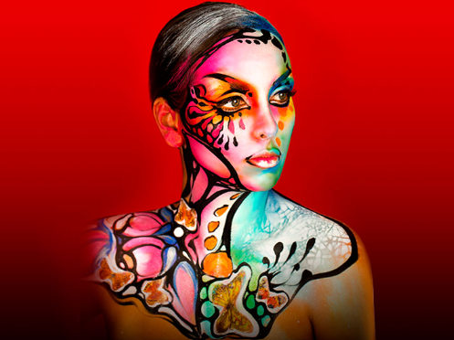

Tipos de Maquillaje más populares
Existen diferentes estilos según la ocasión y el efecto que quieras lograr. Conoce los más comunes y sus características:

Maquillaje Natural
Es el más usado para el día a día. Se caracteriza por ser ligero, resalta los rasgos sin que se note mucho que llevas maquillaje. Ideal para ir a la escuela, trabajar o salir a caminar.
Características: Tonos suaves, poca cantidad de producto, acabado luminoso y fresco.

Maquillaje de Fiesta
Se usa para eventos especiales como bodas, fiestas o cenas. Se usa más producto, colores más intensos y se resaltan más los ojos o los labios, según lo que quieras destacar.
Características: Colores vivos, mayor duración, acabados brillantes o mate.

Maquillaje Artístico
Es el más creativo de todos. Se usan muchos colores, formas y diseños diferentes. Se usa en concursos, pasarelas o como forma de arte. No tiene reglas, lo importante es la imaginación.
Características: Colores muy variados, diseños originales, uso de diferentes materiales.